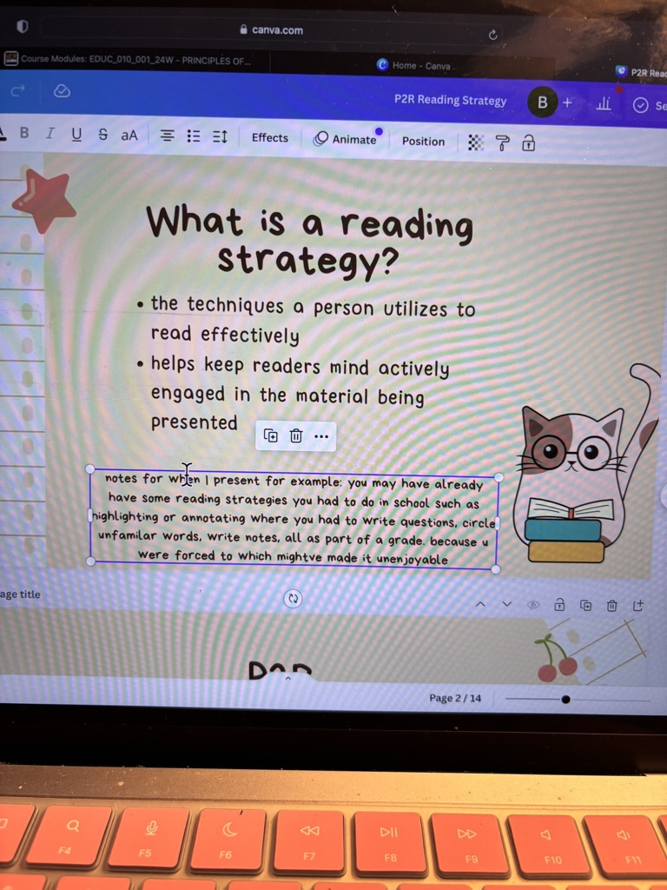
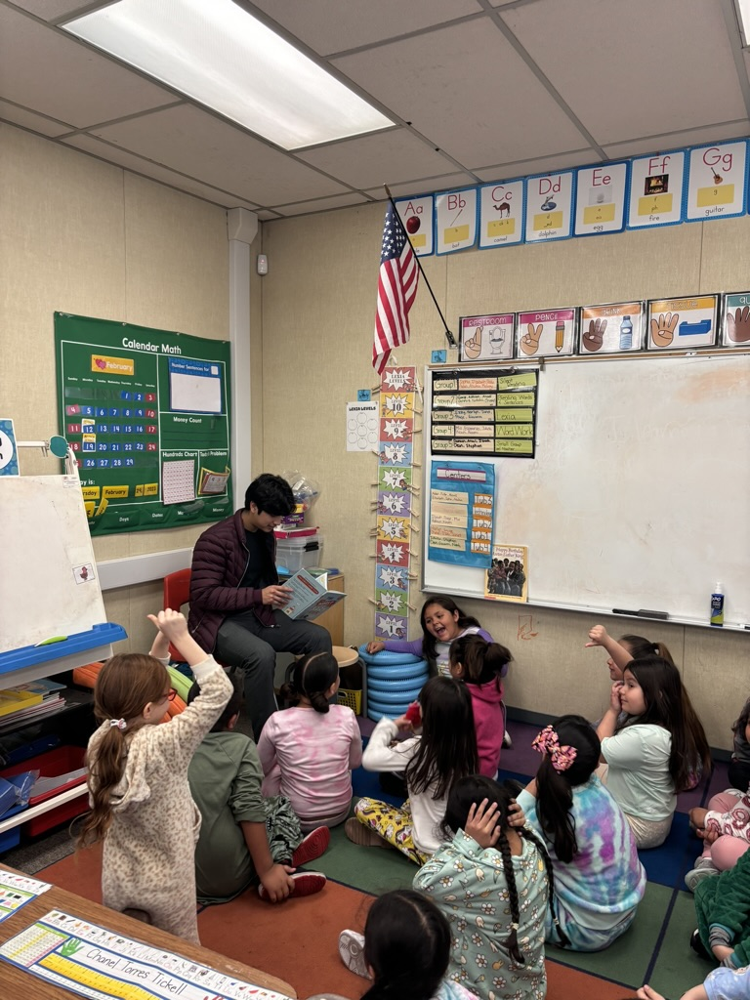
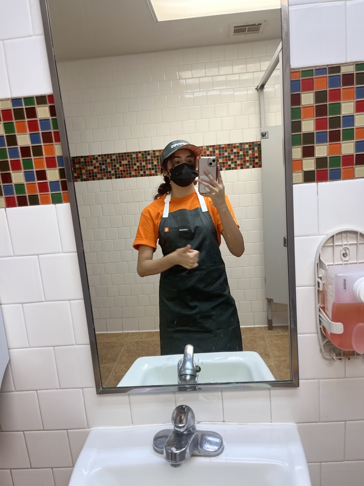
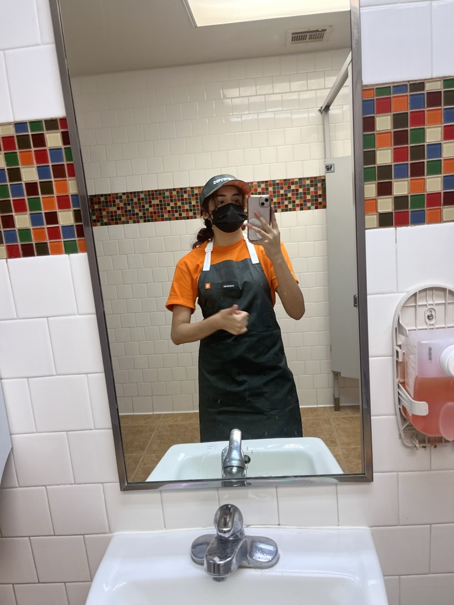

Brianna Tejeda
As an undergraduate student at the esteemed University of California, Riverside (UCR), I have embarked on a journey fueled by a deep-seated passion for education and a fervent desire to shape the minds of tomorrow. Currently pursuing a degree in Education within the School of Education, my focus lies specifically in elementary teaching, where I believe the foundation of a child's academic and personal growth is laid.One of the defining characteristics of my approach to education is my innate creativity and love for crafting. I firmly believe that learning should not only be informative but also enjoyable and immersive. Thus, I constantly seek out innovative ways to integrate hands-on, interactive activities into my lesson plans, ensuring that each child is not only engaged but also actively participating in their own learning journey. Whether it's designing collaborative art projects or orchestrating imaginative storytelling sessions, I strive to create an environment where curiosity is nurtured and exploration is encouraged.
Central to my identity as an aspiring educator is my unwavering patience and genuine affinity for children. I find great joy in being in their presence, and I am deeply committed to understanding and addressing their individual needs and learning styles. From fostering a supportive classroom culture to providing personalized attention to each student, I am dedicated to creating a safe and inclusive space where every child feels valued and empowered to reach their full potential.
My journey in education has been marked by a series of notable achievements, chief among them being the recipient of a prestigious teacher scholarship. This honor not only serves as a testament to my academic excellence and dedication to the field but also reaffirms my commitment to serving as a catalyst for positive change within the education system. It is a privilege that I do not take lightly, and I am determined to honor it by continuing to strive for excellence in all aspects of my academic and professional endeavors.
Looking ahead, I am filled with a profound sense of excitement and anticipation for the future that lies before me. Armed with a wealth of knowledge, a heart full of passion, and a steadfast commitment to making a difference, I am eager to embark on the next chapter of my journey towards becoming an exceptional elementary teacher. With each passing day, I am reminded of the immense privilege and responsibility that comes with shaping the minds and hearts of the next generation, and I am ready to embrace it wholeheartedly.
Experience
Developer
• Worked at Popeyes
• Working at UCR Trio Upward Bound Program
• Experience with kids
Teaching Assistant
• Ran sessions to help students learn how to code
• Reviewed and graded student coding projects
• Created educational content to help promote student education
• TA'd for over 400 students each academic quarter
Education
UC Riverside
Portfolio




